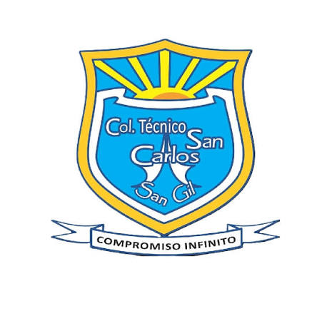

Mi Educación Académica
educacion primaria

mis primeros años en el colegio las amercas donde apendi lo basico de la educacion y apartir de eso seguir mejorando academicamente.

Educación Secundaria
la primera parte de mi educacion la hize en el colegio san carlos durante dos años siendo estos sexto y septimo , despues de eso me fui al colegio guanenta para continuar mi secundaria aprendiendo aun mas cosas y areas nuevas que conocia .

Educación Actual
Actualmente sigo estudiando mi grado 11 y ya falta muy poco para graduarme y empezar a estudiar la ingenieria de sistemas